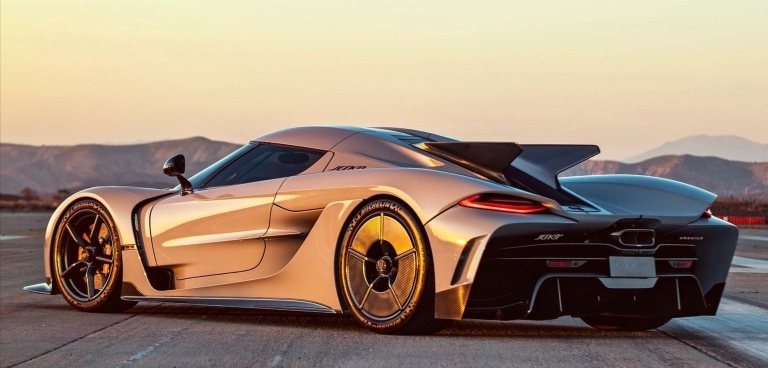
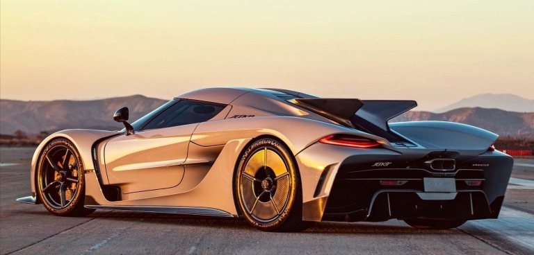

Torna indietro
Il Koenigsegg Jesko Absolut ha stabilito diversi record mondiali che riflettono le sue eccezionali capacità di performance.
È riuscito a completare la corsa da 0 a 400 km/h e ritorno a zero in soli 27,83 secondi, migliorando notevolmente il precedente
record detenuto dalla versione Regera del marchio. Inoltre, il Jesko Absolut ha ottenuto un tempo da 0 a 400 km/h in 18,82 secondi.
Questi tempi mettono in evidenza non solo la potenza bruta del motore, ma anche la capacità del veicolo di gestire tale potenza con
precisione e controllo eccezionali durante fasi critiche di accelerazione e frenata

Torna indietro